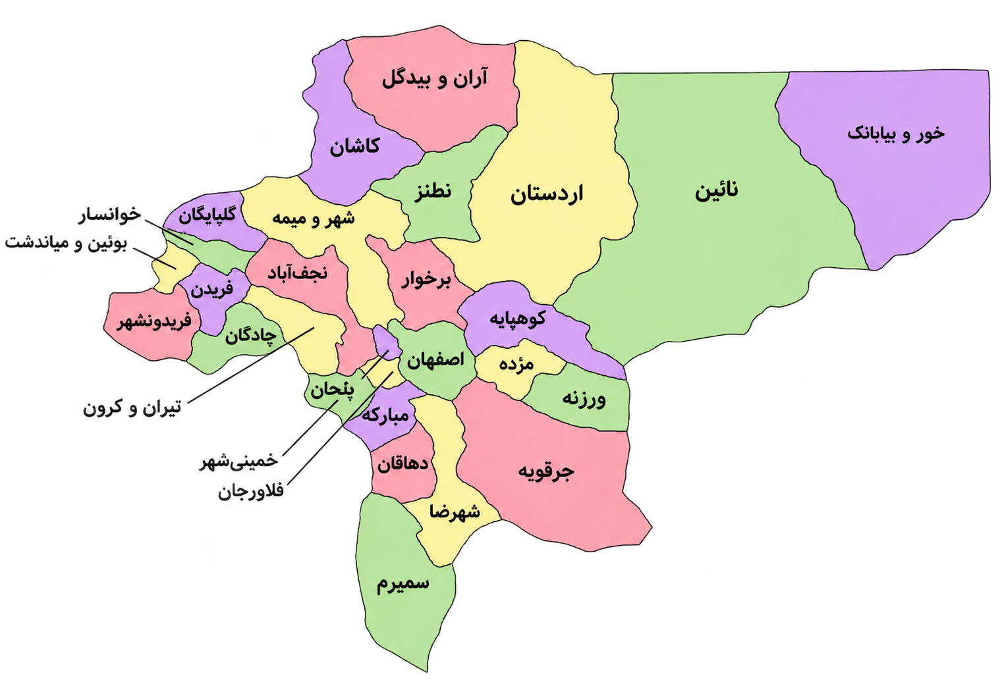
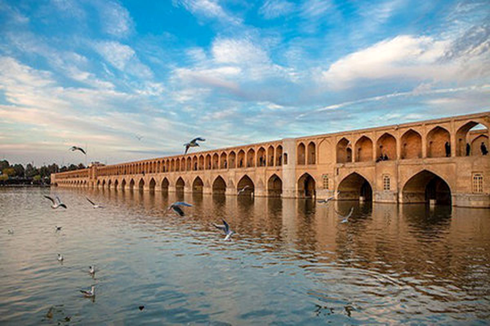
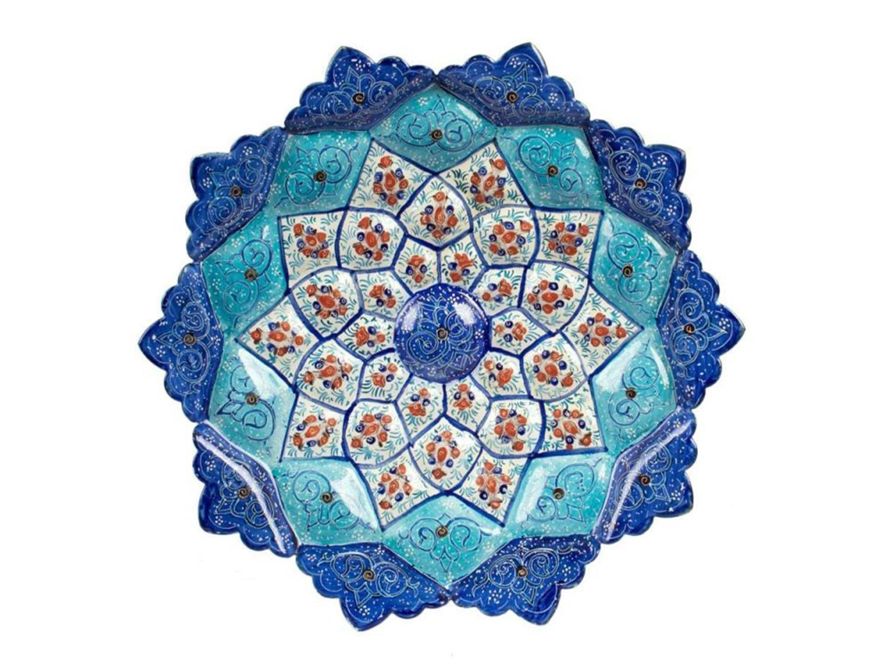
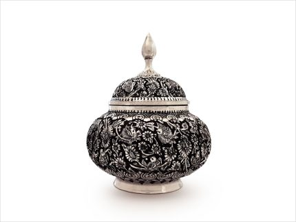
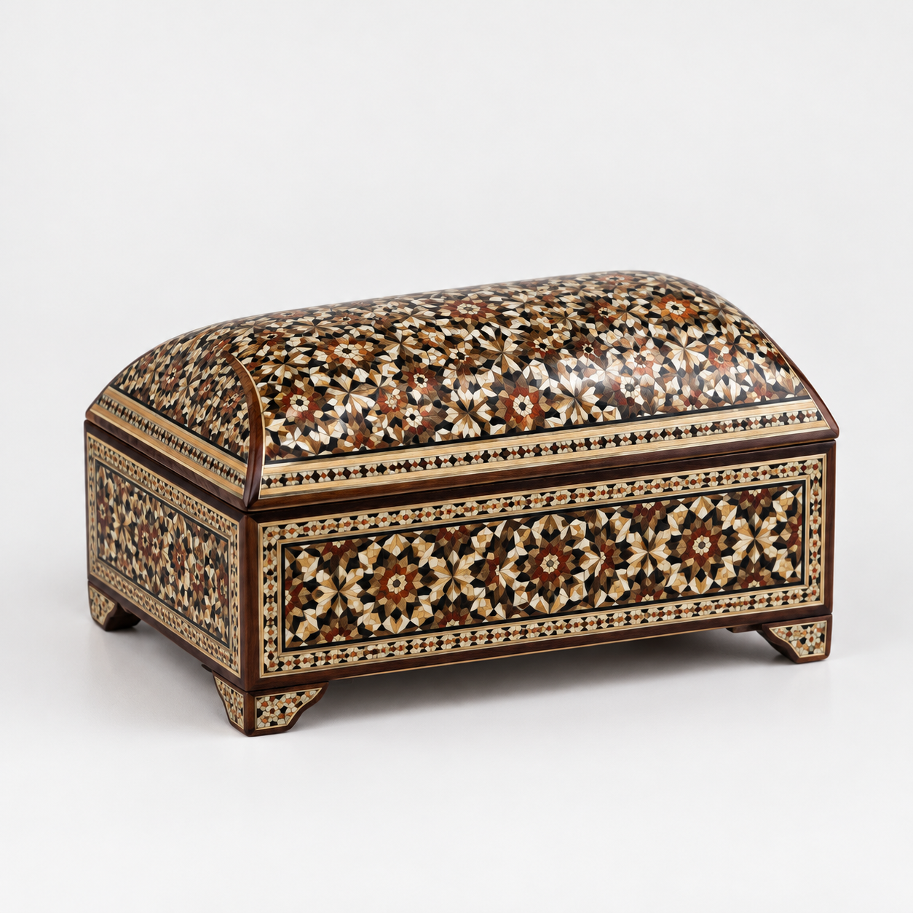

پایتخت فرهنگ و تمدن ایران اسلامی – نصف جهان
اصفهان (نصف جهان)
۱۰۷٬۰۱۸ کیلومتر مربع
≈ ۵٫۴۲ میلیون نفر
پایتخت فرهنگ و تمدن ایران
اصفهان با پیشینهای باستانی، در دوران صفویه به اوج شکوه رسید و پایتخت ایران شد. نام تاریخی آن "سپاهان" (محل گردآمدن سپاهیان) است. میدان نقش جهان، یکی از بزرگترین میدانهای جهان، گواهی بر نبوغ معماری و هنری این شهر است. اصفهان در طول تاریخ کانون همزیستی ادیان و فرهنگهای مختلف بوده است.

نمایش اصفهان روی نقشهاصفهان در مرکز فلات ایران قرار دارد و تنوع اقلیمی از کویر تا کوهستان زاگرس را شامل میشود. زایندهرود، شریان حیاتی استان، از زردکوه سرچشمه گرفته و پس از عبور از شهر اصفهان به تالاب گاوخونی میریزد. پلهای تاریخی روی این رود، از زیباترین شاهکارهای مهندسی سنتی ایران هستند.

اصفهان قطب صنایع دستی جهان است؛ از میناکاری، خاتمکاری، قلمزنی و فیروزهکوبی تا گز و پولکی که شهرت جهانی دارند. این شهر موزهای زنده از هنر و فرهنگ ایرانی است.

میناکاری اصفهان
قلمزنی اصفهان
خاتمکارییکی از بزرگترین میدانهای جهان با مسجد امام، عالیقاپو و مسجد شیخ لطفالله؛ ثبت جهانی ۱۹۷۹.
مسجدی با لایههای معماری هزارساله؛ ثبت جهانی ۲۰۱۲.
پل تاریخی صفوی روی زایندهرود با ۳۳ دهانه.
پل دوطبقهی صفوی که هم گذرگاه و هم سد کوچک است.
کاخ بلند صفوی با ایوان مشرف بر میدان و اتاقهای موسیقی.
کاخ و باغ صفوی؛ بخشی از باغهای ایرانی ثبتشده در یونسکو.
کلیسای ارمنی جلفا با نقاشیهای دیواری پرشکوه.
بازار تاریخی میدان نقش جهان، مرکز صنایع دستی.
گز اصفهان با شیرهی گزانگبین و مغز بادام و پسته از سوغاتهای مشهور کشور است؛ بریانی اصفهان هم غذای محلی معروف شهر است.